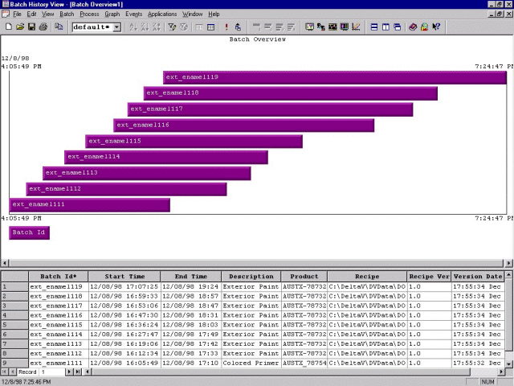

Batch History View
Batch History View retrieves batch-specific data from the Batch Historian database and allows you to view the data in several different formats. It is also possible to add comments and have them saved as part of a batch's history in the Batch Historian database.
Batch history can be viewed using any of the following:
Batch Overview, which displays all batches that are being, or have been, executed in the DeltaV system.
Batch Details, which provides additional information about a particular batch.
Batch Comparison, which provides all the information of the Batch Details display for two batches on a single screen.
Batch Events, which provides the pertinent batch records for the selected phase, operation, unit procedure or procedure.
Process Trend Comparison, which provides a batch-to-batch comparison trend for any historical value.
Signature events, which provide information about electronic signatures associated with batches or process modules. Signature events include failed confirm or verify attempts.
To access Batch History View from DeltaV Operate, click the Batch History View button on the tool bar. Batch History View can also be started by selecting .

The Batch Overview, Batch Details, and Batch Comparison views include both a graph and events grid. For details and comparison, you can also specify the level of detail displayed in the graphs to include:
Only procedures
Procedures and unit procedures
Procedures, unit procedures, and unit operations
Procedures, unit procedures, unit operations, and phases
You can also customize the events grids to limit the type of information displayed and the level of detail. Some of the ways in which the grid can be customized include:
Hiding columns so that only those of interest are displayed
Using filters to limit the information displayed in each column (for example, limiting the start times and end times to a specific period of time)
Sorting the rows of the grid using the values in any one of the columns